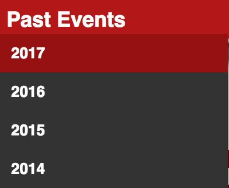

Accessible Rich Internet Applications (ARIA) defines ways to make Web content and Web applications (especially those developed with AJAX and JavaScript) more accessible to people with disabilities.
Have you gone to your favorite sites, closed your eyes, and turned on Voiceover (or other screenreaders)?
How did you feel? Did you feel like you got the same context as a sighted user? Did you feel confused? Irritated? Happy?
Are there elements of my page that rely on Visual Cues to communicate Meaning?
Are there categories on a page that need context of what they are categorizing?
Are you forced to use <div>'s in your CMS?
role<div>'sarticle, banner, button, form, main, navigation, regionrole example
<a role="button" href="/i/moments" class="js-nav js-tooltip js-dynamic-tooltip" data-component-context="moments_nav" data-nav="moments" data-placement="bottom" data-original-title=""> ... </a>
aria-describedbyaria-labelledby
<p id="additional-label">This is additional label info</p>
<form action="">
<label for="basic">Normal Label Example</label>
<input id="basic" name="basic">
...
<label for="labelled" id="labelled-label">Labelled By Example</label>
<input id="labelled" name="labelled" aria-labelledby="labelled-label additional-label">
...
<label for="described">Described By Example</label>
<input id="described" name="described" aria-describedby="described-note">
<em class="note" id="described-note">This is a note about the field</em>
...
<label for="labelled-described" id="labelled-described-label">Labelled By and Described By Example</label>
<input id="labelled-described" name="labelled-described" aria-labelledby="labelled-described-label additional-label" aria-describedby="labelled-described-note">
<em class="note" id="labelled-described-note">This is a note about the field</em>
</form>
aria-expandedtrue, falsearia-expanded example
<input class="search-input" type="text" id="search-query" placeholder="Search Twitter" name="q" autocomplete="off" spellcheck="false" aria-autocomplete="list" aria-expanded="true" aria-owns="typeahead-dropdown-1" dir="ltr" style="direction: ltr; text-align: left;">
aria-expanded example
<input class="search-input" type="text" id="search-query" placeholder="Search Twitter" name="q" autocomplete="off" spellcheck="false" aria-autocomplete="list" aria-expanded="false" aria-owns="typeahead-dropdown-1" dir="ltr" style="direction: ltr; text-align: left;">
aria-haspopuptrue, falsearia-haspopup example
<a href="/settings/account" class="btn js-tooltip settings dropdown-toggle js-dropdown-toggle" id="user-dropdown-toggle" data-placement="bottom" rel="noopener" role="button" aria-haspopup="true" data-original-title="Profile and settings"> ... </a>
aria-hiddentrue, falsearia-hidden example
<span class="text" aria-hidden="true">Home</span>
<span class="u-hiddenVisually a11y-inactive-page-text">Home</span>
<span class="u-hiddenVisually a11y-active-page-text">Home, current page.</span>
<span class="u-hiddenVisually hidden-new-items-text">New Tweets available.</span>
aria-labelaria-label example
<div class="ProfileTweet-actionList js-actions" role="group" aria-label="Tweet actions"> ... </div>
aria-requiredrequired attribute.true, false